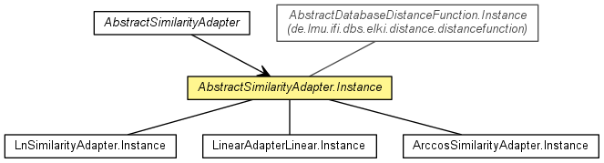

de.lmu.ifi.dbs.elki.distance.distancefunction.adapter
Class AbstractSimilarityAdapter.Instance<O>
java.lang.Object
 de.lmu.ifi.dbs.elki.database.query.AbstractDataBasedQuery<O>
de.lmu.ifi.dbs.elki.database.query.distance.AbstractDistanceQuery<O,D>
de.lmu.ifi.dbs.elki.database.query.distance.AbstractDatabaseDistanceQuery<O,D>
de.lmu.ifi.dbs.elki.distance.distancefunction.AbstractDatabaseDistanceFunction.Instance<O,DoubleDistance>
de.lmu.ifi.dbs.elki.distance.distancefunction.adapter.AbstractSimilarityAdapter.Instance<O>
de.lmu.ifi.dbs.elki.database.query.AbstractDataBasedQuery<O>
de.lmu.ifi.dbs.elki.database.query.distance.AbstractDistanceQuery<O,D>
de.lmu.ifi.dbs.elki.database.query.distance.AbstractDatabaseDistanceQuery<O,D>
de.lmu.ifi.dbs.elki.distance.distancefunction.AbstractDatabaseDistanceFunction.Instance<O,DoubleDistance>
de.lmu.ifi.dbs.elki.distance.distancefunction.adapter.AbstractSimilarityAdapter.Instance<O>
- Type Parameters:
O - Object type
- All Implemented Interfaces:
- DatabaseQuery, DistanceQuery<O,DoubleDistance>
- Direct Known Subclasses:
- SimilarityAdapterArccos.Instance, SimilarityAdapterLinear.Instance, SimilarityAdapterLn.Instance
- Enclosing class:
- AbstractSimilarityAdapter<O>
public abstract static class AbstractSimilarityAdapter.Instance<O>
- extends AbstractDatabaseDistanceFunction.Instance<O,DoubleDistance>

Inner proxy class for SNN distance function.
| Methods inherited from class java.lang.Object |
clone, equals, finalize, getClass, hashCode, notify, notifyAll, toString, wait, wait, wait |
similarityQuery
private SimilarityQuery<? super O,? extends NumberDistance<?,?>> similarityQuery
- The similarity query we use.
AbstractSimilarityAdapter.Instance
public AbstractSimilarityAdapter.Instance(Relation<O> database,
DistanceFunction<? super O,DoubleDistance> parent,
SimilarityQuery<? super O,? extends NumberDistance<?,?>> similarityQuery)
- Constructor.
- Parameters:
database - Database to useparent - Parent distance functionsimilarityQuery - Similarity query
transform
public abstract double transform(double similarity)
- Transformation function.
- Parameters:
similarity - Similarity value
- Returns:
- Distance value
distance
public DoubleDistance distance(DBID id1,
DBID id2)
- Description copied from class:
AbstractDistanceQuery
- Returns the distance between the two objects specified by their object ids.
- Specified by:
distance in interface DistanceQuery<O,DoubleDistance>- Specified by:
distance in class AbstractDistanceQuery<O,DoubleDistance>
- Parameters:
id1 - first object idid2 - second object id
- Returns:
- the distance between the two objects specified by their object ids
getDistanceFactory
public DoubleDistance getDistanceFactory()
- Description copied from interface:
DistanceQuery
- Method to get the distance functions factory.
- Specified by:
getDistanceFactory in interface DistanceQuery<O,DoubleDistance>- Overrides:
getDistanceFactory in class AbstractDistanceQuery<O,DoubleDistance>
- Returns:
- Factory for distance objects